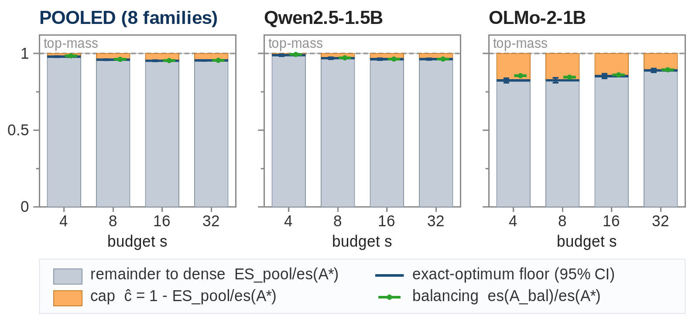
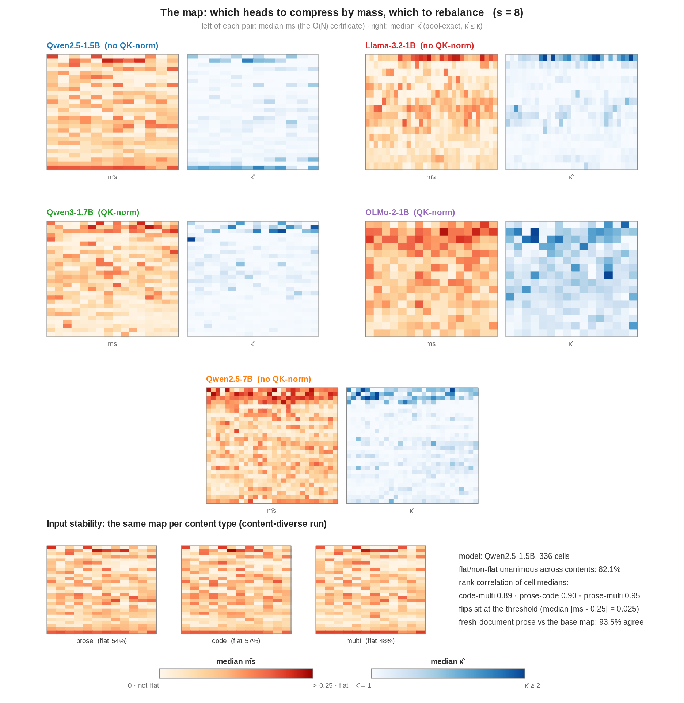
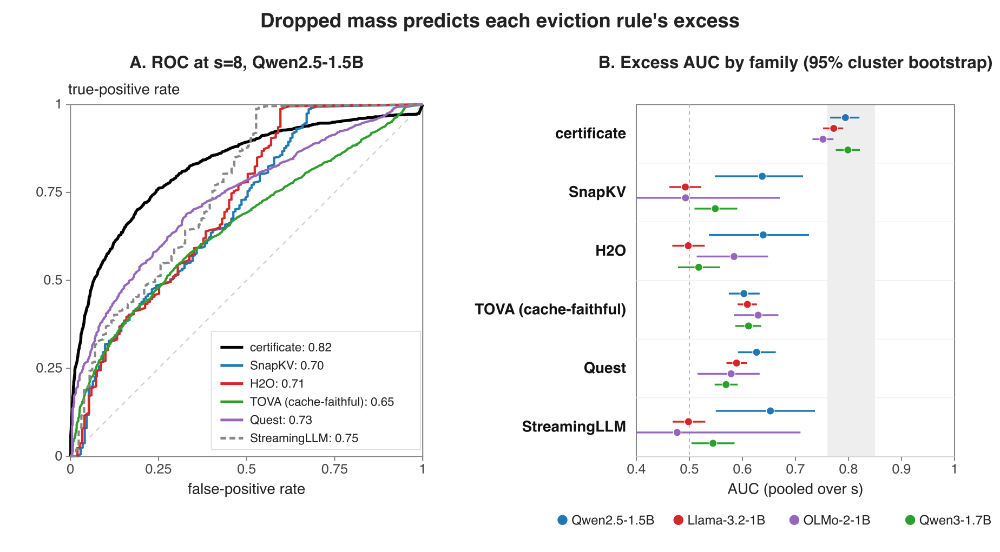
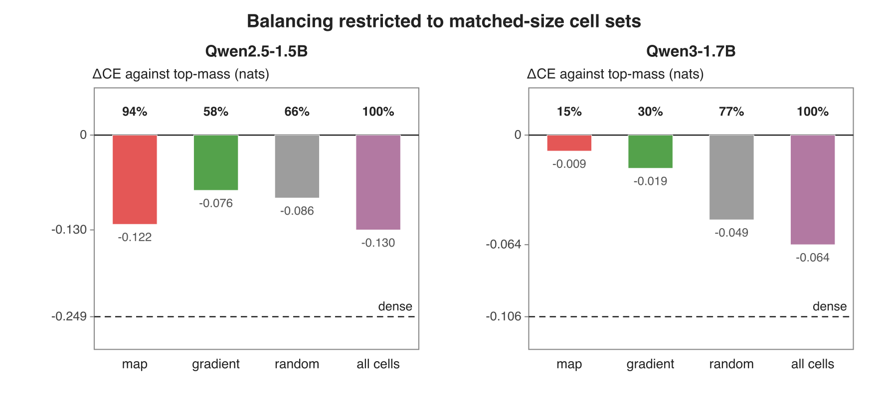

Trust the Mass: Forced Weights in KV‑Cache Eviction
Stanford University
Accepted at the 3rd Workshop on Long-Context Foundation Models, NeurIPS 2026
Abstract
Deployed sparse attention and KV-cache eviction end the same way: the attention weights are renormalized over a kept subset of keys and the rest are discarded. Enumerating the exact best subset under that constraint on 168,192 attention rows from five models shows that keeping the largest weights is already near-optimal, since the best subset closes only a median 2 to 5% of the remaining gap to full attention. If selection closes this little, published margins between eviction methods must come from elsewhere, so we read each method's memory off the device. In the shared evaluation pipeline, the strongest query-agnostic methods hold full memory, because their selections are stored as masks, and only ragged per-head storage frees that memory. Enforcing a nominal budget on one fixed selection costs 14 to 62 benchmark points, and an 87.6-point retrieval margin traces to rankings computed while the question is visible. ContourKV, a training-free allocator built from the dropped-mass statistic, wins 93 of 160 paired comparisons against that state of the art, ties 45, and loses 22, at 0.6 to 1.5 times the memory of the strongest baseline that enforces its budget, and it ties that baseline.
The selection ceiling
How much can smarter token selection help? We computed the exact best possible kept subset on 168,192 attention rows from five models. The answer: almost not at all. Keeping the tokens with the largest attention weights is already near-optimal, and the best possible subset closes only 2 to 5% of the remaining gap to full attention. Published differences between eviction methods are therefore not coming from better selection.

The dropped-mass statistic
One number tells you where selection still has room: the attention mass of the dropped tokens. It predicts where a better subset could help with AUC 0.76 to 0.89 across ten models, checked against the exact optimum. Heads that spread attention widely have room; heads that concentrate it do not.

Measured memory
So where do the reported gaps come from? We ran fourteen methods through one shared pipeline and measured each one's memory on the device. The strongest query-agnostic methods were not saving memory at all: their selections are stored as masks over a full cache. Actually enforcing a method's stated budget costs it 14 to 62 benchmark points, and one 87.6-point retrieval margin came from rankings computed while the question was already visible in the cache.

ContourKV
ContourKV keeps the importance score other methods already use and changes only how the budget is spread across heads. All keys compete in one ranking, a single cutoff decides what stays, and every head keeps its most recent tokens. The cache is physically rebuilt, so the memory savings are real bytes. It wins 93 of 160 paired comparisons against the query-agnostic state of the art and ties the strongest baseline that enforces its budget, at 0.6 to 1.5 times that baseline's memory.

BibTeX
@misc{shi2026trustthemass,
title = {Trust the Mass: Forced Weights in {KV}-Cache Eviction},
author = {Jack Shi and Jerry Gu},
year = {2026},
eprint = {2608.25230},
archivePrefix = {arXiv},
primaryClass = {cs.LG},
note = {Accepted at the Third Workshop on Long-Context
Foundation Models, NeurIPS 2026}
}